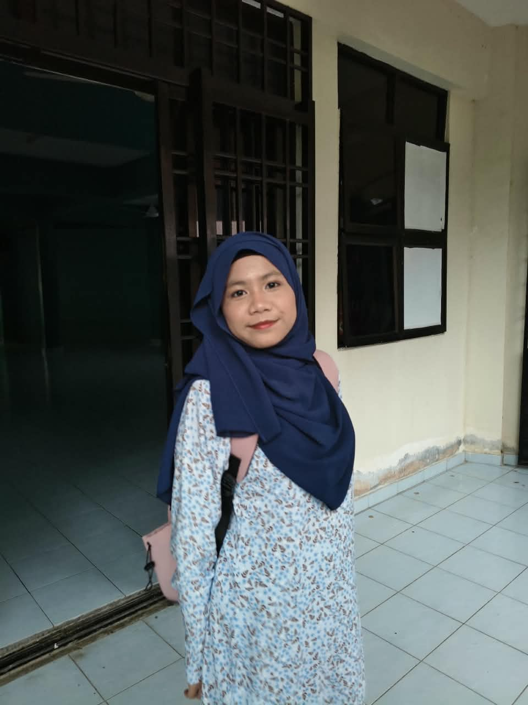

MY BIO
About Qistina
Saya ialah Qistina Batrisyia Amani binti Mohd Fauzi, seorang pelajar Diploma Teknologi Maklumat yang bersemangat dan sentiasa ingin meneroka dunia digital. Saya mempunyai minat yang mendalam dalam sistem komputer, rangkaian, pembangunan web, kecerdasan buatan (AI), Internet of Things (IoT), serta teknologi inovatif yang memberi manfaat kepada masyarakat. Saya merupakan individu yang kreatif, berdedikasi dan cepat belajar, serta gemar menghadapi cabaran baharu dalam bidang teknologi. Saya berhasrat untuk membangunkan kerjaya dalam bidang Teknologi Maklumat, khususnya dalam sokongan IT, rangkaian, pembangunan web dan teknologi digital yang inovatif.
Who I Am
Saya merupakan individu yang kreatif, berdedikasi dan cepat belajar. Saya suka menghadapi cabaran baru, memahami masalah dengan teliti, dan mencari penyelesaian yang praktikal dalam bidang teknologi.
My Strength
Antara kekuatan utama saya ialah kemampuan untuk belajar dengan cepat, bekerja dalam pasukan, dan menyelesaikan masalah dengan pendekatan yang sistematik serta berfikiran kritis.
Career Goal
Saya berhasrat untuk membangunkan kerjaya dalam bidang Teknologi Maklumat, khususnya dalam bidang sokongan IT, rangkaian, pembangunan web dan teknologi digital yang inovatif.
Core Values
Saya percaya pada pembelajaran berterusan, disiplin, semangat yang tinggi, serta komitmen untuk menghasilkan kerja yang berkualiti dan bermanfaat.